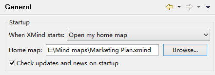

XMind の起動時に、空白マップを開く 、 私のホームのマップを開く、または 前回閉じなかったマップを開くのいずれかを選択できます。XMind で事前設定です。環境設定ダイアログで設定する必要があります。

もし「私のホームマップを開く｣を選択している場合は、どのマップがホームマップにするかを設定します。
- ホーム マップ入力欄の横の[参照]ボタンをクリックします。
- 1 つの XMind マップを選択します。
- 設定ダイアログの[ok]ボタンをクリックし設定を終了します。
XMind が起動するたびに、お気に入りのマップを開きます。このXMindが探すことができなくなるので、マップを削除や移動しないでください。
こちらもご覧ください...